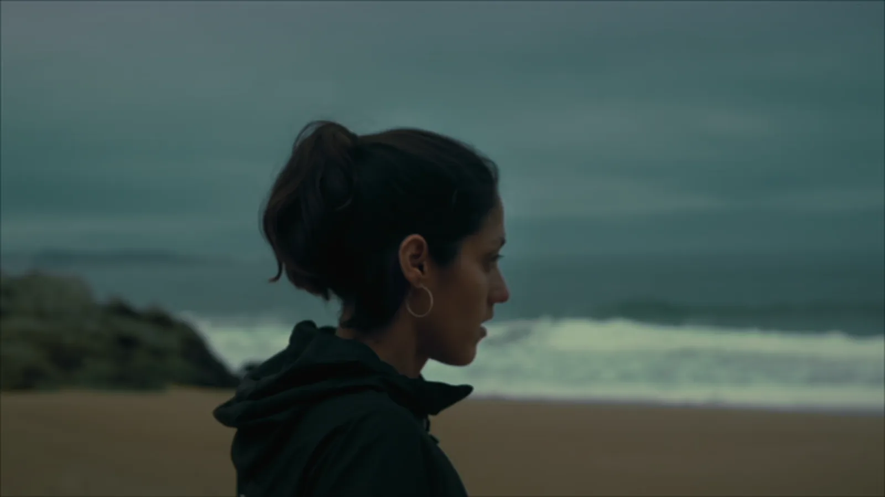
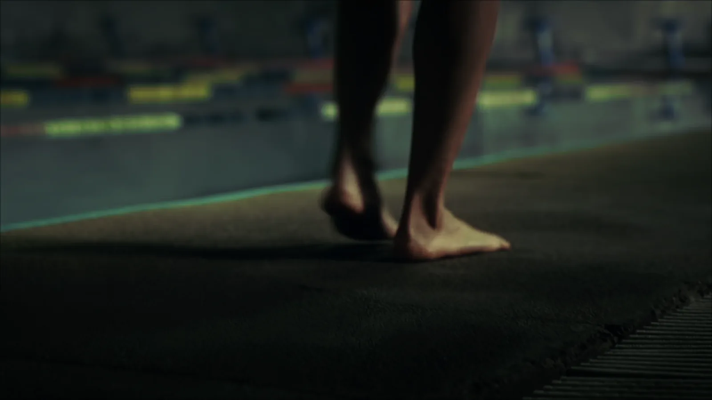
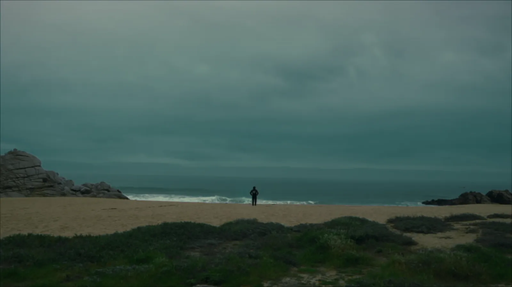
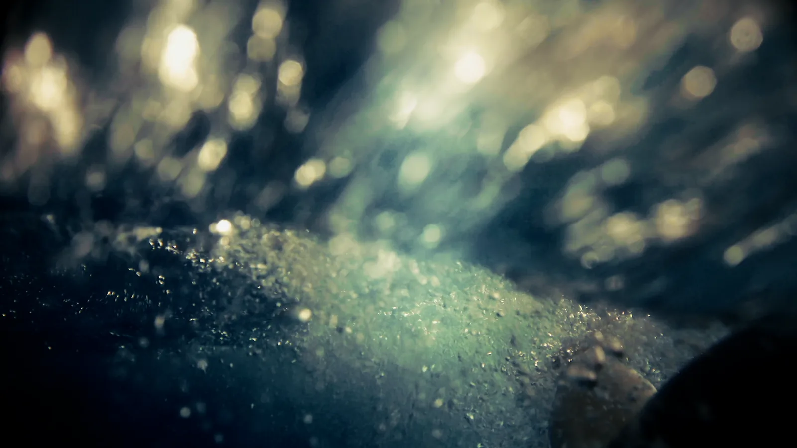
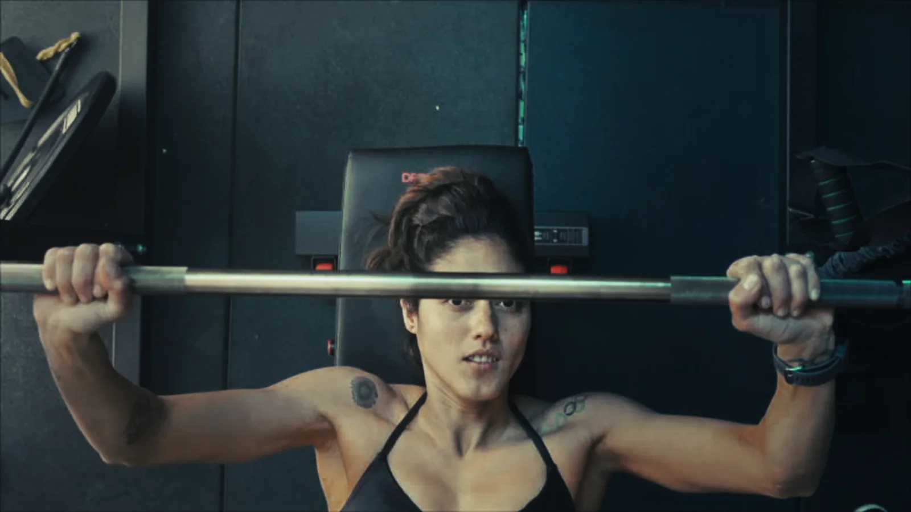
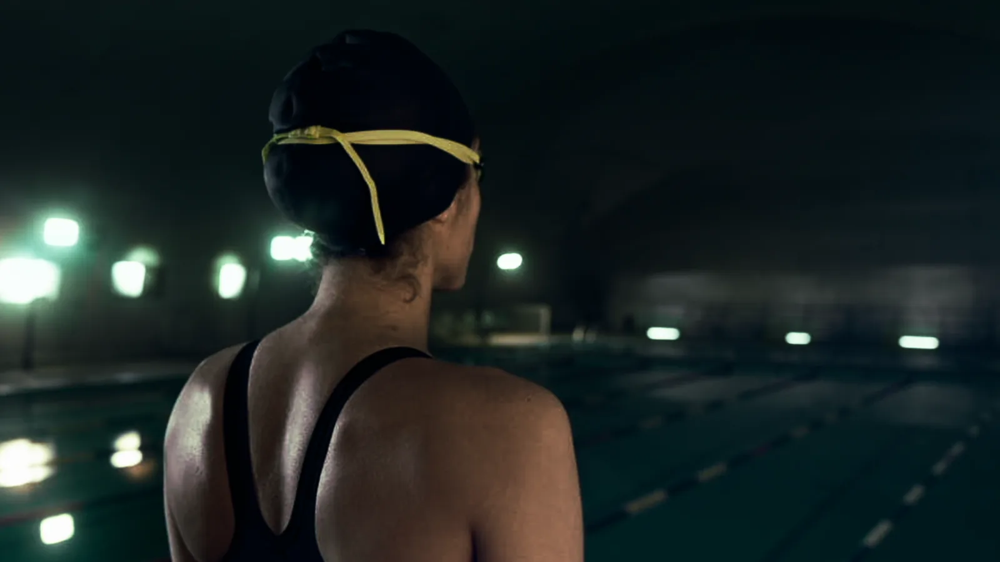
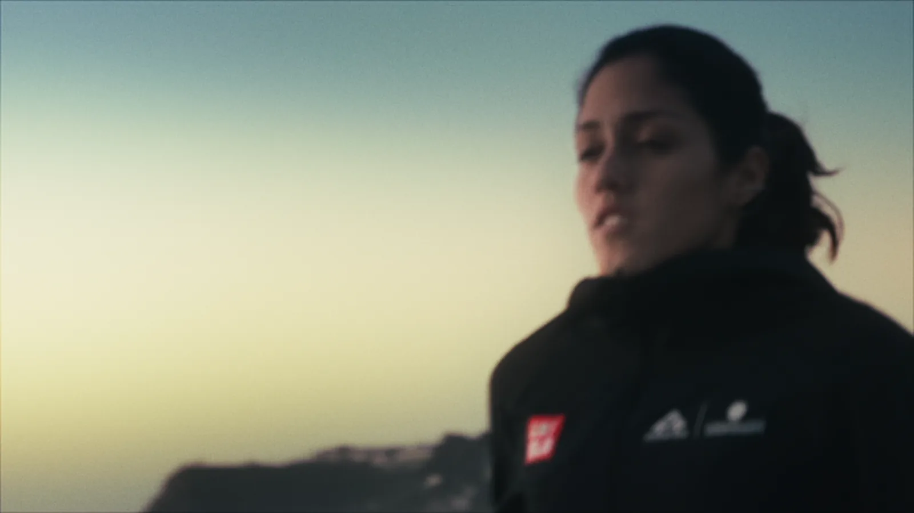
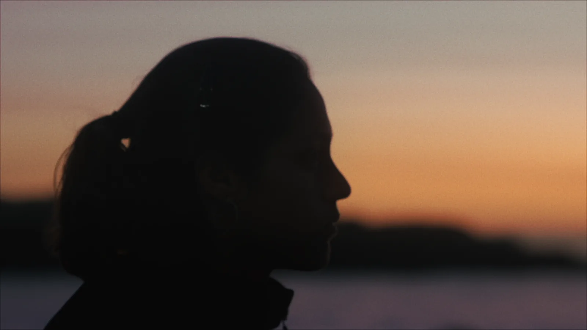
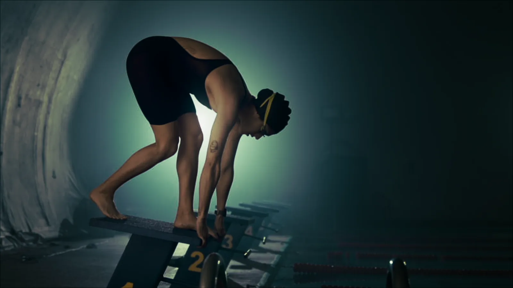

Un retrato audiovisual sobre disciplina y resistencia que acompaña a una nadadora entre el entrenamiento, el mar abierto y la búsqueda de superación.
Dirección & Montaje: Marco Hernández.
Producción & Post: HS Studio.
Dirección de Fotografía & Color: Alejandro Casadiego.








